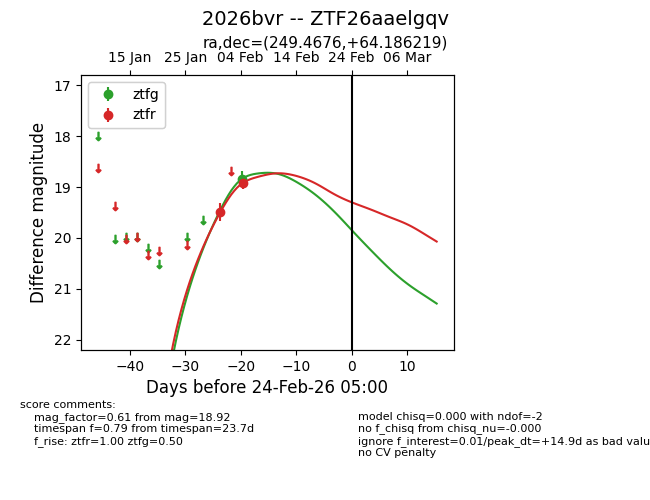
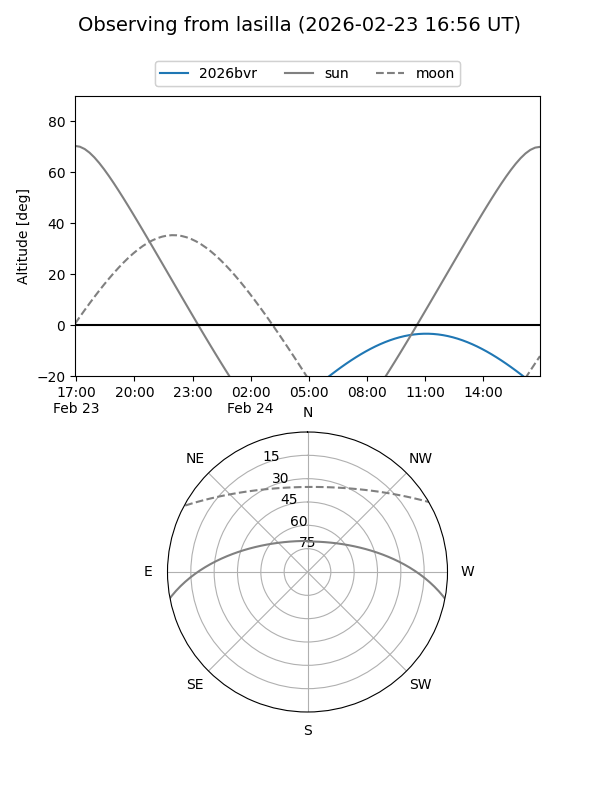
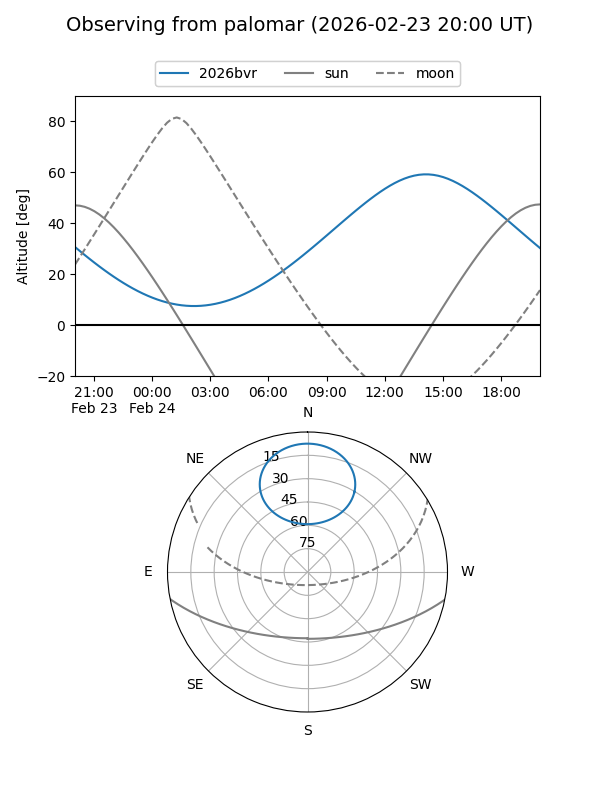

2026bvr
Target 2026bvr at 2026-02-24 09:08
Aliases and brokers:
FINK: link
Lasair: link
ALeRCE: link
TNS: link
YSE: link
alt names
ZTF26aaelgqv (ztf,fink_ztf)
2026bvr (tns,yse)
Coordinates:
equatorial (ra, dec) = 249.4676,+64.18622
equatorial (HMS+DMS) = 16:37:52.23,+64:11:10.39
galactic (l, b) = (95.2118,+38.59211)
Flags:
Photometry:
last ztfg=18.84, ztfr=18.92
1 ztfg, 2 ztfr detections
Lightcurve

Visibility


Additional plots